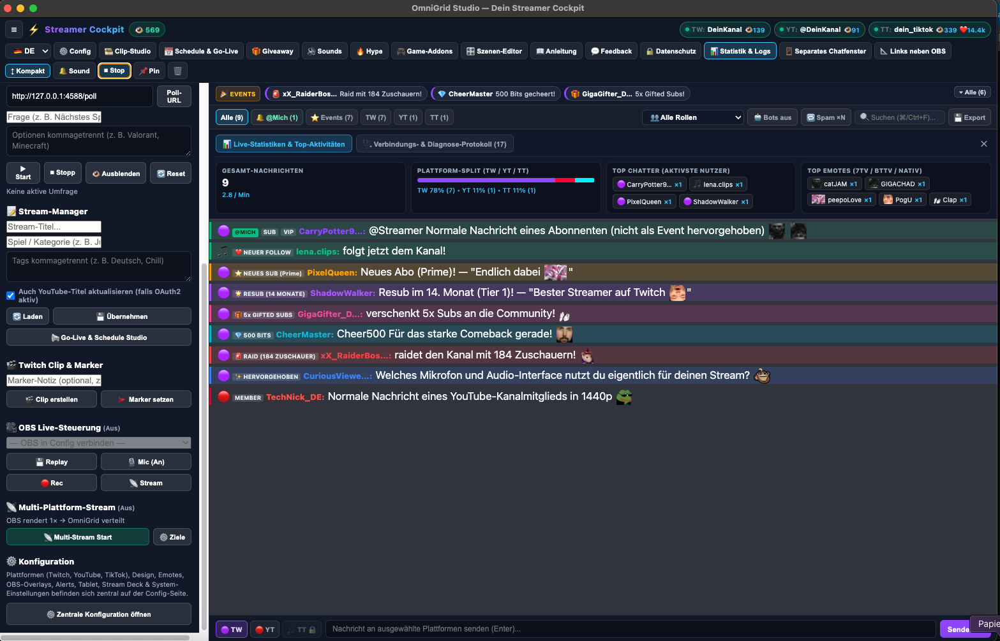

Vereine Twitch, YouTube, TikTok & Kick in einem einzigen lokalen Desktop-Tool: Multi-Chat mit Emotes, lokales RTMP-Relay ohne doppelte GPU-Last, OBS WebSocket-Szeneneditor, Chat Hype Detector, 9:16 Shorts-Pipeline und Game-Addons.

Klicke durch die Module – alles läuft direkt lokal auf deinem Rechner.
Twitch, YouTube und TikTok in einem Stream – inkl. 7TV/BTTV-Emotes, Plattform-Split-Balken, Event-Ticker (Raids, Bits, Subs), Spam-Filter, Chat-Export und direkter Antwort auf ausgewählte Plattformen.
Liest Twitch, YouTube Live-Chat (inkl. SuperChats & Member-Emotes) und TikTok Live gleichzeitig aus – inklusive Top-Chatter- & Emote-Analytics.
Kein teurer Restream-Cloud-Dienst nötig: OBS sendet 1x lokal an OmniGrid, und das integrierte Relay verteilt den Stream an Twitch, YouTube, TikTok & Kick.
Vom Chat-Hype direkt zum fertigen Clip: Replay-Buffer automatisch sichern, zuschneiden und als 9:16 Short mit Blur-Hintergrund exportieren.
Steuere OBS über WebSocket v5: Drag-&-Drop-Layout, 1-Klick-Insertion für Chat-, Alert-, Musik- & Game-Overlays sowie kompletter Audio-Mixer.
Live-Rank/LP-Sync, Item-Build-Overlay, Anti-Ghosting-Minimap, Auto-Pentakill-Clips und Chat-Commands wie !elo, !build oder !opgg.
Alle Overlays laufen als lokale Browser-Quellen (127.0.0.1:4588). Keine Telemetrie, kein Account-Zwang, keine monatlichen Gebühren.
| Feature | OmniGrid Studio | Cloud-Tools / Abo-Suites |
|---|---|---|
| Preis & Lizenz | 0 € (Open Source) | 15–50 € / Monat |
| Multi-Stream RTMP-Relay | Lokal integriert (Twitch, YT, TikTok, Kick) | Nur im teuren Pro-Abo |
| Daten & Privatsphäre | 100 % lokal auf deinem PC/Mac | Cloud-Zwang & Tracking |
| 9:16 Shorts-Schnitt & Auto-Hype | Direkt eingebaut (FFmpeg) | Externe Zusatz-Tools nötig |